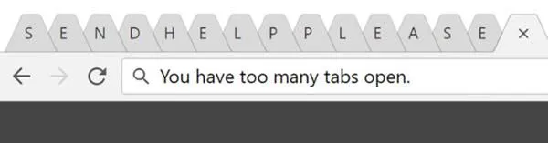
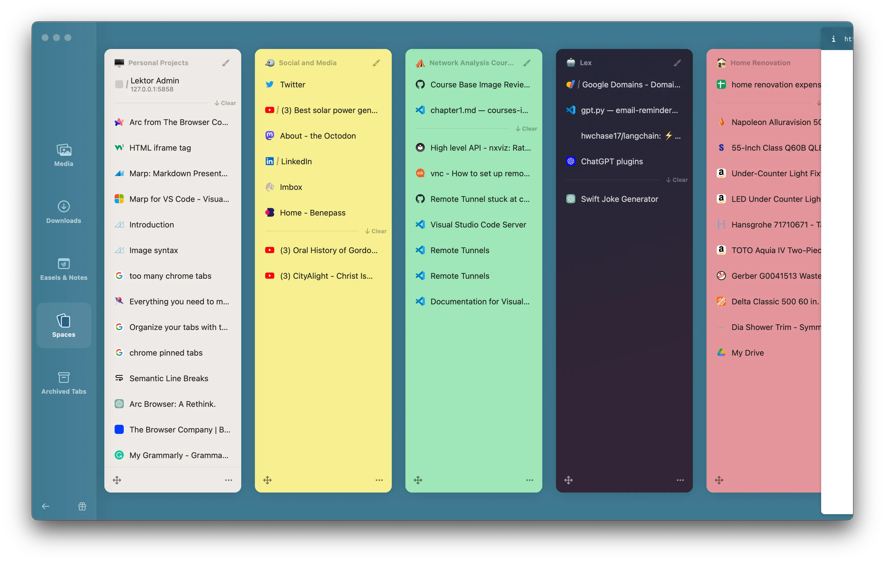
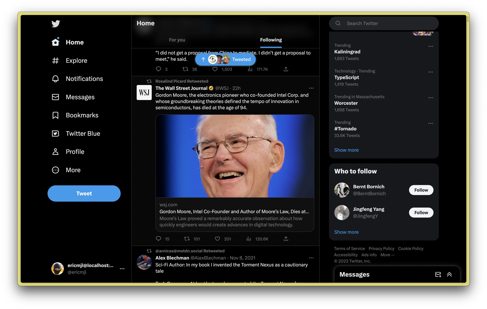
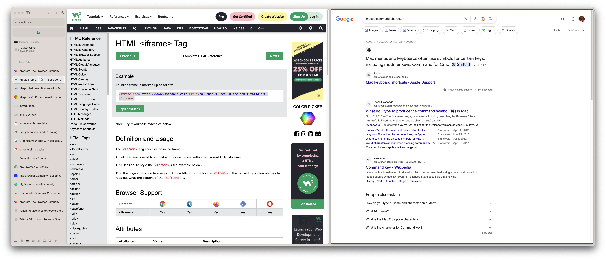
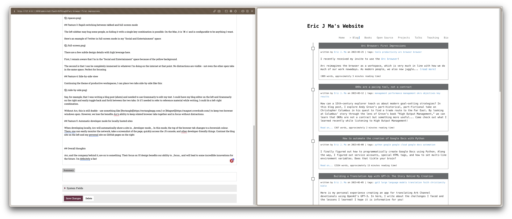

written by Eric J. Ma on 2023-03-25 | tags: tools productivity arc browser browser browser review ui design user experience tab management workspace focus internet browsing web development browser features tech review web tools online workspace internet tools
I recently received my invite to use the Arc browser!
Arc reimagines the browser as a workspace. Given how much of our work is done in the browser, this makes sense as an idea. As modern people, we also juggle multiple hats. As a result, our browser can become unwieldy by having numerous tabs from various contexts open simultaneously. Arc rethinks the traditional browser UI, and after using it for 24 hours, I like how it fits my brain.
In a traditional browser implementation, we have the browser and its tabs. But, for the chronic "million-tabbers" out there, finding that thing you were looking at can become a chore. That's where Arc's first feature comes in: tabs that expire.
Arc's take on tabs is that most tabs should expire while some should be kept around. That's where they distinguish between pinned tabs and tabs that can expire. Chrome has pinned tabs for a while now, but Chrome doesn't enforce tabs to expire after a set number of hours. On the other hand, knowing that most tabs don't need to live around for too long, Arc defaults to opening tabs with a default 12-hour expiry schedule. Users can then drag the ones they want to keep into the pinned section.
An example of where this came in handy is my drafting this blog post. I pinned the main Lektor UI but allowed my other tabs, where I'm doing the fact-checking, to expire after I'm done. This is a minor detail in the grand scheme but has incredibly high leverage for user productivity. Allowing browser tabs to expire helps clarify my browser (workspace).
Another take Arc has on tabs is being able to group them into spaces.
The modern person takes on multiple life projects at the same time. For example, I have projects that are ongoing in parallel: a home renovation, personal GPT experiments, blogging, and more. If we're not careful, we'll have a million tabs open in our browser window.
To solve this problem, Chrome has implemented tab groups. It can work well until...

(Image credit: this website)
At that point, who's to know what is in each tab?
Arc solves this problem by doing two things.
Firstly, tabs are moved to the left. This lets each tab's title be much more visible. Then, if necessary, we can resize the tab to provide more browser real estate space.
Secondly, tabs are grouped into spaces. Each space can correspond to one context. For example, I can have one space for websites related to home renovation and another for blogging. The critical thing is this: when I have activated one space, tabs from the other spaces are not visible. This means I no longer have the visual distraction of other things going on. This massive UI improvement supports focusing on one context at a time!
Here are screenshots of a few tabs, organized into their respective spaces, that I have kept open.
Bonus: each space can even be configured with different colours!
As you can see, within one space, I only see the tabs relevant to that space. As long as I'm studious about making sure I only open tabs related to that space, I can focus on that task alone. Websites like YouTube, LinkedIn, and Twitter are kept together in a "Social and Entertainment" space, making them out of sight and out of mind.
If I ever need to, there is also a UI for viewing all the spaces I have open:

The best part here is that if I close the Arc browser, the tabs and spaces are restored, allowing me to switch right into the given context that I need at that moment.
The left sidebar may bug some people,
so hiding it with a single key combination is possible.
On the Mac, it is ⌘-s and is configurable to be anything I want.
Here's an example of Twitter in full-screen mode in my "Social and Entertainment" space:

There are a few subtle design details with high leverage here.
First, I remain aware that I'm in the "Social and Entertainment" space because of the yellow background.
The second is that I can be completely immersed in whatever I'm doing on the internet at that point. No distractions are visible - not even the other open tabs in the same space. Perfect for focusing.
Continuing the theme of productive workspaces, I can place two tabs side-by-side like this:

Say, for example, that I was writing a blog post (ahem) and needed to use Grammarly to edit my text. I could have my blog editor on the left and Grammarly on the right and easily toggle back and forth between the two tabs. Or if I needed to refer to reference material while writing, I could do a left-right combination.
Without Arc, this is still doable - use something like Rectangle or Magnet to keep two browser windows open. However, we lose the benefits Arc's ability to keep related browser tabs together and in focus without distractions.
When developing locally, Arc will automatically show a site in developer mode. In this mode, the top of the browser tab changes to a brownish colour. One can easily monitor the network, take a screenshot of the page, quickly access the JS console, and do other developer-friendly things.
Contrast the blog site on the left and my personal website on GitHub pages on the right:

Notice the brown bar at the top of the blog editor, hosted locally.
It's the little things like these that Arc has put a lot of work into prioritizing. As a result, they make the browser just that much more friendly for day-to-day development usage.
Arc, and the company behind it, are on to something. Their focus on UI design benefits our ability to focus and will lead to some incredible innovations for the future. I'm a fan!
I send out a newsletter with tips and tools for data scientists. Come check it out at Substack.
If you would like to sponsor the coffee that goes into making my posts, please consider GitHub Sponsors!
Finally, I do free 30-minute GenAI strategy calls for organizations who are seeking guidance on how to best leverage this technology. Consider booking a call on Calendly if you're interested!